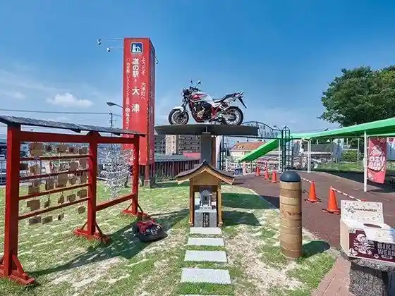
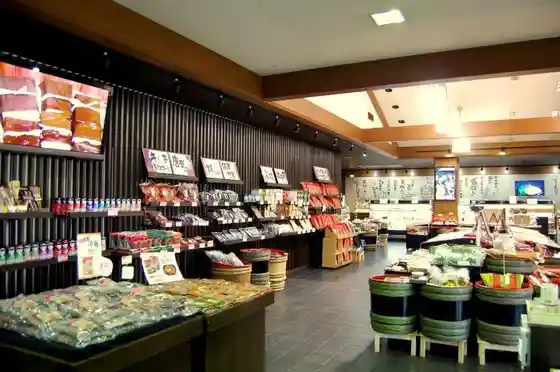
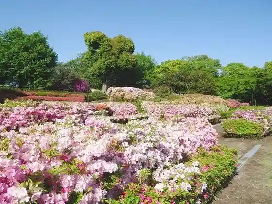
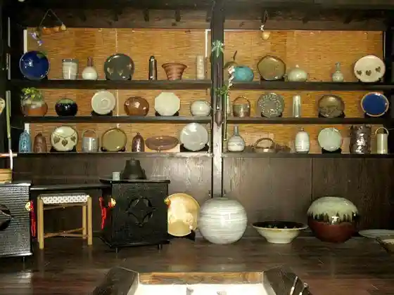

Roadside Station Ozumachi
Ozumachi, Kumamoto · 096-294-1600 · Official / source link

Kimuchi Village
Ozumachi, Kumamoto · 096-293-0551 · Official / source link

Ozumachi Hiyoshi Shrine
Ozumachi, Kumamoto · 096-293-3115 · Official / source link
Showa Sono
Ozumachi, Kumamoto · 096-293-3115 · Official / source link

Enman Tera Kama
Ozumachi, Kumamoto · 090-3197-4941 · Official / source link

HSR Kyushu (Hondasefutei & Raidingu Plaza Kyushu)
Ozumachi, Kumamoto · 096-293-1370 · Official / source link
Hatago Hashimoto
Ozumachi, Kumamoto · 096-293-2141 · Official / source link
TG Kohii
Ozumachi, Kumamoto · 096-285-5573 · Official / source link
Musubi Ya En
Ozumachi, Kumamoto · 080-8563-6650 · Official / source link
Edo Residence Kaki no Ha Sushi Honpo
Ozumachi, Kumamoto · 096-293-9191 · Official / source link
Restaurant+cafe Iroha
Ozumachi, Kumamoto · 096-283-9000 · Official / source link
Zoro Zo
Ozumachi, Kumamoto · 096-293-3111 · Official / source link
Satsumaimo Kitchinka MAIMOTTO
Ozumachi, Kumamoto · 080-3376-4466 · Official / source link
Karaimoyasan
Ozumachi, Kumamoto · 096-294-1618 · Official / source link
Eto Ie House
Ozumachi, Kumamoto · Official / source link
Mova Villa Ozu
Ozumachi, Kumamoto · 070-8958-5160 · Official / source link